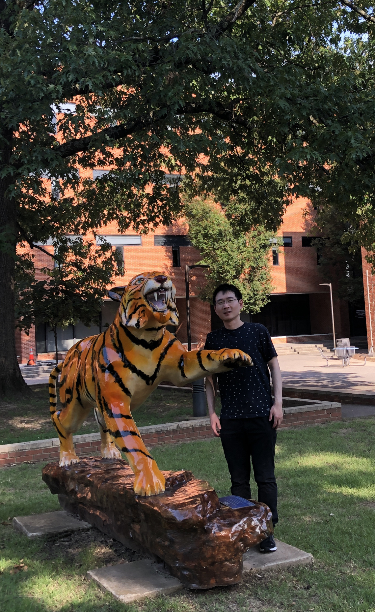

|
|
|  |
Chao Chen
Ph.D. Student in Computer Science
University of Memphis
Email: cchen11 AT memphis DOT edu
|
About Me
I am delighted to extend a warm invitation to you as I share my journey as a passionate PhD student in Computer Science at the University of Memphis. With a focus on exploring the realms of IoT and Cyber Security, my academic pursuit has been nothing short of thrilling and rewarding.
In 2023, I was honored to be awarded the esteemed Peter I. Neathery Fellowship, a distinguished recognition bestowed upon only four outstanding graduate students from the University of Memphis. This accolade has not only reinforced my commitment to excellence but also provided me with unique opportunities to delve deeper into my research interests.
My primary research interests lie at the intersection of the fascinating and ever-evolving fields of IoT and Cyber Security. The potential that the Internet of Things holds for transforming the way we interact with technology and the world around us is simply awe-inspiring. Coupled with my passion for safeguarding these interconnected systems, I am driven to contribute to a safer and more secure digital landscape.
As I progress in my academic journey, I am also actively pursuing my aspiration to become a peer reviewer. Through this role, I aim to actively engage with the scholarly community, exchange ideas, and contribute constructively to the advancement of knowledge in my field.
Currently, I am proud to be a member of the X+ Lab, where I have the privilege of collaborating with Dr. Zhang Shaohu on cutting-edge research projects in the field of computer science. Working alongside esteemed researchers in a collaborative environment has been an invaluable experience that constantly nurtures my passion for knowledge and innovation.
This website serves as a platform to share my research, insights, and accomplishments with the world. I hope you find my work intriguing and inspiring as I strive to make meaningful contributions to the academic community and beyond.
Thank you for visiting, and I look forward to connecting with you on this exciting journey of exploration and discovery. Together, let us shape the future of computer science and make a positive impact on society.
Research Interest:
-
IoT Security: microcontroller-based secure communication
Award:
-
Peter I. Neathery Fellowship 2023
Professional Service:
-
IEEE Internet of Things Journal Reviewer
-
Transactions on Mobile Computing Journal Reviewer